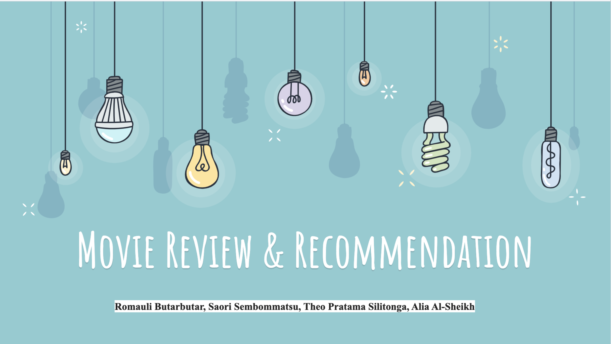
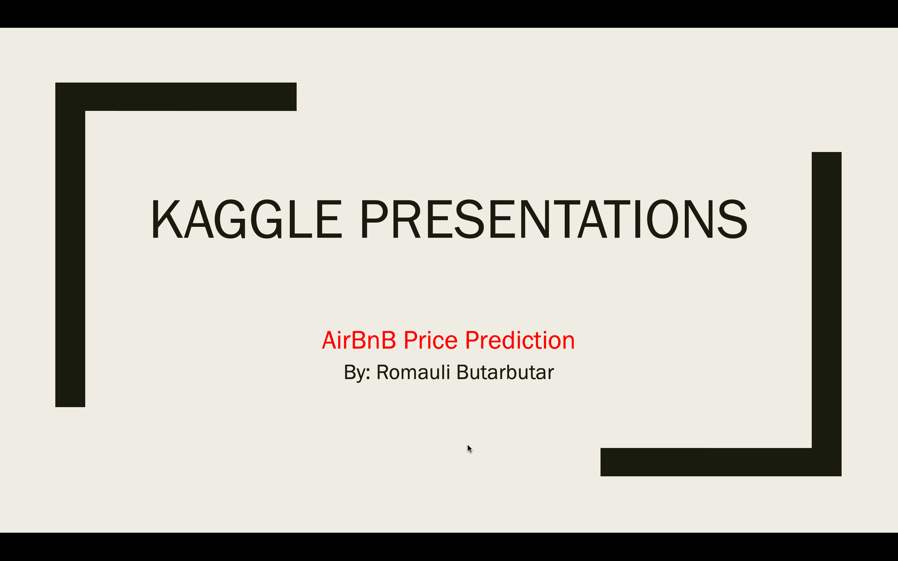
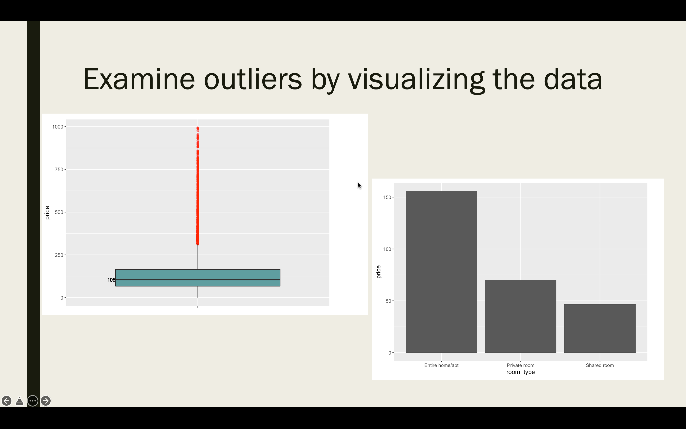

S&P Global Market Intelligence - Capstone Project
Solving Real World Problems with Analytics - Predicting the Financial Risks of Real Estates Owned by REITs Affected by Hurricanes.
This project aims to analyze and predict the financial risks of real estates owned by REITs
affected by hurricanes (that made landfall) using data mainly generated from S&P Global Market
Intelligence. Furthermore, our group wants to estimate the financial losses of real estates owned
by REITs affected by the hurricanes in the future using the insights we gained from the historical data.

Spotify Podcast : “Digital audio series - Driving Growth Through Personalization”
Build a classifier to help listeners discover new podcasts episodes or series by
implementing NLP techniques to analyze podcast data/metadata (show description, episode description, transcript), we can validate podcasters’ descriptions of its content for classification.
Using Spotify Podcast Data Set, we want to implement NLP techniques to provide a sophisticated recommendation lists by performing classification.

NYC-311 Call-log-analysis
NYC 3-1-1 is a service channel that allows New Yorkers to access government services and to file complaints via multiple platforms, such as phone calling, texting and other social media (About NYC311).
Our team aims to help our client, the NYC government, to relieve the stress of the call center, allocate public resources efficiently, and maintain quality of service by incorporating tools such as call automation.
Interactive dashboards can benefit analysts, their managers, and c-level executives. Dashboards make it easy to separate a large amount of data into something more specific to the end user’s roles. It can also simplify analytics into something for anyone, no matter their programming experience, to understand the data.

Movie Review & Recommendation : Using Sentiment Analysis & Similarity Matrix
Although more people started watching movies at home after the Covid-19 started, there were not many platforms
that provide comprehensive reviews of a movie and information of other recommended movies based on what you searched or watched.
From multiple data sources, we have obtained all the scattered reviews,
conducted sentiment analysis and created a single platform that houses reviews, sentiment ratings, recommendation lists.

Apple Stock: The impact of Twitter sentiments daily closing price of shares
Our project proposal would use non-quantifiable data, from social media
news, namely tweets about the Apple stock, to predict its future stock trend with sentiment analysis. We will retrieve, extract, and analyze the effects of news sentiments on the Apple stock price in
the market, developing a dictionary-based sentiment analysis model, and evaluating the model for
gauging the effects of news sentiments on the Apple stock.


Predicting Rent Price Airbnb - Kaggle Competition
People interested in renting an apartment or home, share information about themselves and their property on Airbnb.
Those who end up renting the property share their experiences through reviews. The dataset describes property, host,
and reviews for over 35,000 Airbnb rentals in New York along 90 variables.
This project goal is to construct a model using the dataset supplied and use it to predict the price of a set of Airbnb rentals included in scoringData.csv.
Submissions will be evaluated based on RMSE (root mean squared error). Lower the RMSE, better the model.

A Case for Analytics of Food insecurity during covid-19
Rebalancing food distribution in Jakarta informed by the monitoring of trends in both food availability and food insecurity.
Using trend analytics to visualize the geographic of food availability vs food insecurity would be a feasible approach for this project to overcome problematic hunger society. In other words, we can connect connect all parties for a food security solution.

Digital Product Innovation: Migrant Blue Connect
Providing the millions of blue collar workers that seek employment abroad with access to both necessary resources to gain employment and an easily accessible platform to connect them with employers that provide safe working conditions , fair pay, and equitable treatment standards.
We believe providing one stop access to safe job placement resources
for historically vulnerable populations of migrant workers
will achieve the aim of providing safe and ethical working conditions.


{kind=link}
{kind=link}